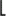
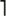
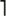

C++ Programming Robert Sedgewick - Princeton University Addison Wesley Professional Algorithms in C++, Parts 1–4: Fundamentals, Data Structure, Sorting, Searching, Third Edition C++ Programming Robert Sedgewick - Princeton University Addison Wesley Professional Algorithms in C++, Parts 1–4: Fundamentals, Data Structure, Sorting, Searching, Third Edition
8.3. Top-Down Mergesort
Once we have a merging procedure, it is not difficult to use that procedure as the basis for a recursive sorting procedure. To sort a given file, we divide it in half, recursively sort the two halves, and then merge them. An implementation is given in Program 8.3; an example is depicted in Figure 8.2. As mentioned in Chapter 5, this algorithm is one of the best-known examples of the utility of the divide-and-conquer paradigm for efficient algorithm design.
Each line shows the result of a call on merge during top-down mergesort. First, we merge A and S to get A S; then, we merge O and R to get O R; then, we merge O R with A S to get A O R S. Later, we merge I T with G N to get G I N T, then merge this result with A O R S to get A G I N O R S T, and so on. The method recursively builds up small sorted files into larger ones.
Top-down mergesort is analogous to a top-down management style, where a manager gets an organization to take on a big task by dividing it into pieces to be solved independently by underlings. If each manager operates by simply dividing the given task in half, then putting together the solutions that the subordinates develop and passing the result up to a superior, the result is a process like mergesort. Not much real work gets done until someone with no subordinates gets a task (in this case, merging two files of size 1); but management does much of the work, putting together solutions.
Mergesort is important because it is a straightforward optimal sorting method (it runs in time proportional to N log N) that can be implemented in a stable manner. These facts are relatively easy to prove.
As we have seen in Chapter 5 (and, for quicksort, in Chapter 7), we can use tree structures to help us to visualize the recursive call structure of a recursive algorithm, to help us to understand variants of the algorithm, and to expedite the analysis of the algorithm. For mergesort, the recursive call structure depends only upon the size of the input. For any given N, we define a tree, called a divide-and-conquer tree, that describes the sizes of the subfiles that are processed during the operation of Program 8.3 (see Exercise 5.73): If N is 1, the tree is a single node with label 1; otherwise, the tree is a node containing the file size N as the root, the tree for N/2 as the left subtree, and the tree for as the left subtree, and the tree for  N/2 as the right subtree. Each node in the tree thus corresponds to a call on mergesort, with the label giving the problem size corresponding to the recursive call. When N is a power of 2, this construction leads to a complete balanced tree with powers of 2 in all the nodes and 1s in all the external nodes. When N is not a power of 2, the tree is more complicated. Examples of both cases are illustrated in Figure 8.3. We have enountered such trees before, when considering an algorithm with the same recursive call structure as mergesort, in Section 5.2. N/2 as the right subtree. Each node in the tree thus corresponds to a call on mergesort, with the label giving the problem size corresponding to the recursive call. When N is a power of 2, this construction leads to a complete balanced tree with powers of 2 in all the nodes and 1s in all the external nodes. When N is not a power of 2, the tree is more complicated. Examples of both cases are illustrated in Figure 8.3. We have enountered such trees before, when considering an algorithm with the same recursive call structure as mergesort, in Section 5.2.
These tree diagrams depict the sizes of the subproblems created by top-down mergesort. Unlike the trees corresponding to quicksort, for example, these patterns are dependent on only the initial file size, rather than on the values of the keys in the file. The top diagram shows how a file of 32 elements is sorted. We (recursively) sort two files of 16 elements, then merge them. We sort the files of 16 elements by (recursively) sorting files of 8 elements, and so forth. For file sizes that are not a power of 2, the pattern is more intricate, as indicated by the bottom diagram.
Program 8.3. Top-down mergesort|
This basic mergesort implementation is a prototypical divide-and-conquer recursive program. It sorts the array a[l], ..., a[r] by dividing it into two parts a[l], ..., a[m] and a[m+1], ..., a[r], sorting them independently (via recursive calls), and merging the resulting ordered subfiles to produce the final ordered result. The merge function may need to use an auxiliary array big enough to hold a copy of the input, but it is convenient to consider the abstract operation as an inplace merge (see text).
template <class Item>
void mergesort(Item a[], int l, int r)
{ if (r <= l) return;
int m = (r+l)/2;
mergesort(a, l, m);
mergesort(a, m+1, r);
merge(a, l, m, r);
}
|
Structural properties of divide-and-conquer trees are directly relevant to the analysis of mergesort. For example, the total number of comparisons used by the algorithm is precisely the sum of all the node labels.
Property 8.1. Mergesort requires about N lg N comparisons to sort any file of N elements|
In the implementations in Sections 8.1 and 8.2, each (N/2)-by-(N/2) merge will require N comparisons (this amount could vary by 1 or 2, depending on how sentinels are used). The total number of comparisons for the full sort is therefore described by the standard divide-and-conquer recurrence: MN = MN/2 + MN/2 + N; with M1 = 0. The recurrence also describes the sum of the node labels and the external path length of a divide-and-conquer tree with N nodes (see Exercise 5.73). The stated result is easy to verify when N is a power of 2 (see Formula 2.4) and to prove by induction for general N. Exercises 8.12 through 8.14 describe a direct proof.
|
Property 8.2. Mergesort uses extra space proportional to N|
This fact is clear from the discussion in Section 8.2. We can take some steps to reduce the extra space used at the expense of making the algorithm considerably more complicated (for example, see Exercise 8.21). As we shall see in Section 8.7, mergesort is also effective when the file to be sorted is organized as a linked list. In this case, the property still holds, but the extra space is used for the links. For arrays, as we noted in Section 8.2 and shall discuss in Section 8.4, it is possible to do merges in place, although this strategy is unlikely to be worthwhile in practice.
|
Property 8.3. Mergesort is stable, if the underlying merge is stable|
This fact is easy to verify by induction. For merge implementations such as Program 8.1, it is easy to show that the relative position of duplicate keys is undisturbed by merging. However, the more intricate the algorithm, the higher the chance that stability is disturbed (see Exercise 8.6).
|
Property 8.4. The resource requirements of mergesort are insensitive to the initial order of its input|
In our implementations, the input determines only the order in which elements are processed in the merges. Each pass requires space and a number of steps proportional to the subfile size, because of the costs of moving to the auxiliary array. The two branches of if statements may take slightly different amounts of time in the compiled code, which could lead to a slight input-dependent variation in running time, but the number of comparisons and other operations on the input is not dependent on how it is ordered. Note that this is not the same as saying that the algorithm is nonadaptive (see Section 6.1)—the sequence of comparisons does depend on the input order.
|
Exercises |  8.9 Show the merges that Program 8.3 does to sort the keys E A S Y Q U E S T I O N. 8.9 Show the merges that Program 8.3 does to sort the keys E A S Y Q U E S T I O N.
| | 8.10 Draw divide-and-conquer trees for N = 16, 24, 31, 32, 33, and 39. | |  8.11 Implement a recursive mergesort on arrays, using the idea of doing three-way, rather than two-way, merges. 8.11 Implement a recursive mergesort on arrays, using the idea of doing three-way, rather than two-way, merges.
| |  8.12 Prove that all the nodes labeled 1 in a divide-and-conquer tree are on the bottom two levels. 8.12 Prove that all the nodes labeled 1 in a divide-and-conquer tree are on the bottom two levels.
| | 8.13 Prove that the labels on the nodes on each level in the divide-and-conquer tree of size N sum to N, except possibly for the bottom level. | | 8.14 Using Exercises 8.12 and 8.13, prove that the number of comparisons required by mergesort is between N lg N and N lg N + N. | | 8.15 Find and prove a relationship between the number of comparisons used by mergesort and the number of bits in the lg N-bit positive numbers less than N. |
|